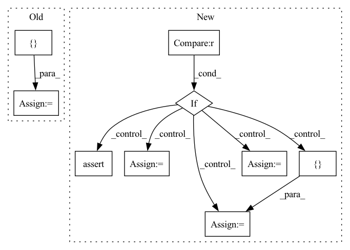

Pattern ID :28973
Before Change
val_dataset = ConcatDataset(val_split_list)
all_dataset = ConcatDataset([train_dataset, val_dataset])
dataset_dict = {
"train": train_dataset,
"val": val_dataset,
"all": all_dataset
}
return dataset_dict[split], num_classes
def split_dataset(dataset, n, seed=0):After Change
def get_dataset(dataset_name, root, task_list, split="train", download=True, transform=None, seed=0):
assert split in ["train", "val", "test"]
if dataset_name in datasets.__dict__ :
// load datasets from common.vision.datasets
// currently only PACS, OfficeHome and DomainNet are supported
supported_dataset = ["PACS", "OfficeHome", "DomainNet"]
assert dataset_name in supported_dataset
dataset = datasets.__dict__[dataset_name]
train_split_list = []
val_split_list = []
test_split_list = []
// we follow DomainBed and split each dataset randomly into two parts, with 80% samples and 20% samples
// respectively, the former (larger) will be used as training set, and the latter will be used as validation set.
split_ratio = 0.8
num_classes = 0
// under domain generalization setting, we use all samples in target domain as test set
for task in task_list:
if dataset_name == "PACS":
all_split = dataset(root=root, task=task, split="all", download=download, transform=transform)
num_classes = all_split.num_classes
elif dataset_name == "OfficeHome":
all_split = dataset(root=root, task=task, download=download, transform=transform)
num_classes = all_split.num_classes
elif dataset_name == "DomainNet":
train_split = dataset(root=root, task=task, split="train", download=download, transform=transform)
test_split = dataset(root=root, task=task, split="test", download=download, transform=transform)
num_classes = train_split.num_classes
all_split = ConcatDataset([train_split, test_split])
train_split, val_split = split_dataset(all_split, int(len(all_split) * split_ratio), seed)
train_split_list.append(train_split)
val_split_list.append(val_split)
test_split_list.append(all_split)
train_dataset = ConcatDatasetWithDomainLabel(train_split_list)
val_dataset = ConcatDatasetWithDomainLabel(val_split_list)
test_dataset = ConcatDatasetWithDomainLabel(test_split_list)
dataset_dict = {
"train": train_dataset,
"val": val_dataset,
"test": test_dataset
}
return dataset_dict[split], num_classes
else:
// load datasets from wilds
// currently only iwildcam, camelyon17 and fmow are supported
supported_dataset = [ "iwildcam", "camelyon17", "fmow"assert dataset_name in supported_dataset
dataset = wilds.get_dataset(dataset_name, root_dir=root, download=True)
num_classes = dataset.n_classesIn pattern: SUPERPATTERN
Frequency: 4
Non-data size: 9
Instances Fragment ID: 85372182
Project Name: thuml/transfer-learning-library
Commit Name: babf26f7d7a9ee351c2a7f1bb35ae6f9a4e423be
Time: 2021-08-24
Author: chenbx18@mails.tsinghua.edu.cn
File Name: examples/domain_generalization/classification/utils.py
M Class Name: AnonimousClass
N Class Name: AnonimousClass
M Method Name: get_dataset(7)
N Method Name: get_dataset(7)
M Parent Class:
N Parent Class:
M File Name: examples/domain_generalization/classification/utils.py
N File Name: examples/domain_generalization/classification/utils.py
M Start Line: 55
M End Line: 91
N Start Line: 107
N End Line: 165
Before Change
files = []
labels = []
// for debugging
true_labels = []
self.conversion_map = []
for file_idx, (file, label_idx) in enumerate(data):
files.append(file)After Change
]
files, labels = map(list, zip(*data))
if data_fraction > 0 :
assert data_fraction < 1, "Only use data_fraction for values smaller than 1."
if no_labels:
labels = [ -1 = [l for _, l in data]
from sklearn.model_selection import train_test_split
files, _, labels, _ = train_test_split(
files, labels, train_size=data_fraction, stratify=labels, random_state=42
)
self.reader = ops.readers.File( Fragment ID: 85372309
Project Name: vturrisi/contrastive-learning
Commit Name: 5a1c1e3e03b99bfedfc219fb6eed2b8661264aa3
Time: 2022-04-12
Author: vt.turrisi@gmail.com
File Name: solo/utils/dali_dataloader.py
M Class Name: PretrainPipeline
N Class Name: PretrainPipeline
M Method Name: __init__(15)
N Method Name: __init__(14)
M Parent Class: Pipeline
N Parent Class: Pipeline
M File Name: solo/utils/dali_dataloader.py
N File Name: solo/utils/dali_dataloader.py
M Start Line: 554
M End Line: 598
N Start Line: 540
N End Line: 633
Before Change
if self.season_dims is not None:
if self.season_mode not in ["additive", "multiplicative"]:
raise NotImplementedError("Seasonality Mode {} not implemented".format(self.season_mode))
self.season_params = nn.ParameterDict({} )
for name, dim in self.season_dims.items():
self.season_params[name] = new_param(dims=[dim])
// self.season_params_vec = torch.cat([self.season_params[name] for name in self.season_params.keys()])After Change
//// Covariates
self.covariate_names = list(covar_config.keys())
if self.covariate_names is not None :
assert self.n_lags > 0
self.covar_nets = nn.ModuleDict({} )
for covar in self.covariate_names:
// self.covariate_nets[covar] = new_param(dims=[self.n_forecasts, self.n_lags])
// self.covariate_nets[covar] = nn.Linear(self.n_lags, self.n_forecasts, bias=False)
covar_net = nn.ModuleList()
d_inputs = self.n_lags
for i in range(self.num_hidden_layers):
covar_net.append(nn.Linear(d_inputs, self.d_hidden, bias=True))
d_inputs = d_hidden Fragment ID: 85372300
Project Name: ourownstory/neural_prophet
Commit Name: ae0ba720f438f8a50ffd5e397e3cde56a91a157b
Time: 2020-06-22
Author: oskar.triebe@merantix.com
File Name: neuralprophet/time_net.py
M Class Name: TimeNet
N Class Name: TimeNet
M Method Name: __init__(10)
N Method Name: __init__(9)
M Parent Class: nn.Module
N Parent Class: nn.Module
M File Name: neuralprophet/time_net.py
N File Name: neuralprophet/time_net.py
M Start Line: 96
M End Line: 102
N Start Line: 46
N End Line: 138
Before Change
:return: None
if dict_param_name is None:
dict_param_name = {}
if value_rename is None:
value_rename = {}
if dataset_name is None:
dataset_results = resultsAfter Change
nrows = int(np.sqrt(len(columns)))
ncols = int(np.ceil(len(columns) / nrows))
if fig is None :
assert axes is None, "If fig is None, axes must be None"
fig, axes_view = plt.subplots(nrows=nrows, ncols=ncols, figsize=(ncols*6, nrows*3))
else:
assert axes is not None, "If fig is not None, axes must be not None"
if isinstance(axes, plt.Axes):
axes_view = [ axes = axes
axes_view = np.asarray(axes_view)
assert axes_view.size == len(columns), "axes must have the same length as columns"
axes_view = np.ravel(axes)
index = 0
for i, col in enumerate(columns): Fragment ID: 85372170
Project Name: neurotorch/neurotorch
Commit Name: d061f9dec404e0ccc63c7b979bfd78742ec1e4b3
Time: 2022-08-30
Author: 50332514+JeremieGince@users.noreply.github.com
File Name: applications/figure_generation_util.py
M Class Name: AnonimousClass
N Class Name: AnonimousClass
M Method Name: metric_per_all_variable(0)
N Method Name: metric_per_all_variable(0)
M Parent Class:
N Parent Class:
M File Name: applications/figure_generation_util.py
N File Name: applications/figure_generation_util.py
M Start Line: 387
M End Line: 431
N Start Line: 391
N End Line: 457